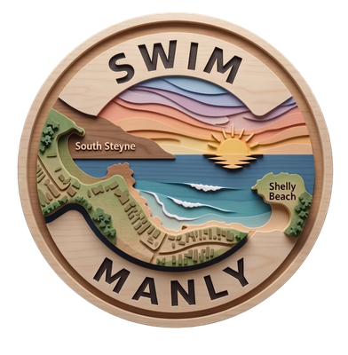
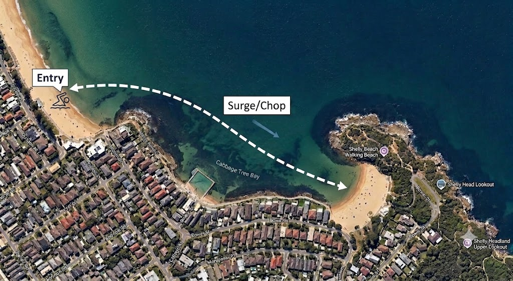

Built for the swimmers of Cabbage Tree Bay. Free, non-profit, and always will be.
Every forecast hour is scored three ways, because a swim has three different problems: getting in, getting pushed around, and getting across.
Each one is a dot on a rail. Tap any band below to see what it means in the water.
Three buttons sit above the forecast. They decide how much of the app you get. Tap one and it stays that way, on this phone, until you change it.
Everything. The swell and wind-chop maps, the tide graph, the week ahead, and the raw forecast numbers behind the dots. This is what you start with.
The verdict, the three dots, the timeline, sea temp, pollution and bluebottles. What you need before a swim, and nothing else.
Tick the sections you want and save. The verdict, the dots and the timeline always stay — the rest is yours to hide. It's also where you choose how the three dots are drawn.
Swim Manly is a web app — no store, no account, no ads, nothing tracked. Add it to your home screen and it opens like any other app, full screen, and loads even on a bad signal down at the beach.
Did you get here from a Facebook link? Facebook opens pages inside its own browser, and a tile cannot be added from there — the option simply isn't in the menu. Tap the three dots in the corner and choose Open in external browser (on iPhone it may say Open in Safari or Open in Chrome), then follow the steps for that browser below. Instagram works the same way.
The app doesn't score "Manly". It scores multiple spots you actually swim at.

Entry is scored at the south-west corner of South Steyne, where most swimmers start. Surge is measured mid-bay near the halfway entrance at Bower Lane; Chop is the average across the dashed line running across to Shelly Beach.
The forecast runs hour by hour for the next five days. It's usually not "today is bad" — it's "today is bad at 11, and fine at 7."
Straight from Beachwatch NSW who provides updates every day 6am and 1:30pm. It's worth a glance after heavy rain.
Nothing beats a look at the water before you go. Two free feeds point at the beach: the Manly Pacific webcam and the Manly LSC Surfline camera.
Reported by swimmers, for swimmers. If you get stung, or you see a windrow of them on the sand, log it. It takes ten seconds and it's the only bluebottle data anyone has for this bay.
You can file one report every four hours, and each report stays on the card for 24 hours. Long enough that a dawn sighting still warns the lunchtime crowd; short enough that yesterday's bloom doesn't haunt a clean bay.
Same model, run forward. Confidence drops the further out you look — treat day ten as a hint and day one as a forecast.
You know these people. The one always in before sunrise. The one in the pink cap. You nod at them on the sand and have no idea who they are.
Everyone who’s said hello shows up here. Tap Who’s Out There?, write yours, take your turn.
40 characters for the name, 280 for the hello. Why you swim here, what you're training for, or just good morning.
Optional. JPG, PNG or WebP, up to 2 MB. Plenty of swimmers post without one.
Your hello appears the moment you tap send — no approval, no waiting. Anything off is pulled afterwards.
Every recent hello shows on the card, newest first — no queue, no waiting your turn.
When a new hello lands, the card lights up on the main screen. No need to go looking.
Each hello disappears 7 days after it goes up, so the card always shows who’s around right now.
The app starts each hour with a clean slate, then takes points off for everything the ocean throws at it. Fewer penalties, better swim. Six things drive it:
The biggest single lever. Energy climbs with the square of the height — a 1 m swell isn't twice a 0.5 m swell, it's four times.
Seconds between waves. Long-period swell carries far more energy than short wind slop of the same height, and it's the part that surges through the bay.
The bay is a trap with one door. A southerly swell dies on the headland; a north easterly walks straight in, a south easterly goes straight towards The Corso sparing swimmers or finds you around the headland depending on the period. The app runs the direction and period through a shelter table built for this bay's exact shape.
Offshore wind (from the west) grooms the surface and actually earns credit. Onshore wind builds chop over the fetch and costs you. Direction matters more than speed.
One of the two wave forecasts we're handed. Swell has travelled here from a distant storm; sea is the wave the wind is raising nearby, right now, still underneath the wind that made it. Each arrives as a height, a period and a direction, and each is run through the bay's shelter table. Sea is short and steep — a few seconds between crests — so less of it bends around the headland, but what gets in arrives steep. It is not Chop: sea is what's forecast outside the bay, chop is what you swim through inside it.
On a low tide the footprint of the headland extends and provides more shelter. On a high tide it's the opposite, opening the door to more swell and range of directions.
Ask anyone who was here before 2002 and they'll tell you the bay was fished out. Almost nothing left. Then a group of locals lobbied, and in March that year Cabbage Tree Bay was declared a no-take aquatic reserve — twenty hectares, the whole bay, from the southern end of Manly Beach to Shelly Headland.
Swim it now. Blue gropers that follow you like dogs. Wobbegongs asleep under the ledges. Giant cuttlefish, more than 450 species of fish across seven habitats in a bay you can cross in twenty minutes. Not on a good day, not in season — all year. That is what happens when you stop taking things out.
You're swimming through a protected area. The whole bay, the rocks, the sand:
no fishing, any method take nothing, dead or alive not even empty shells don't touch, don't chase no dogs
The shells are somebody's house. The urchins are not fish food. And the groper who swims up to your mask is doing it because nobody here has ever given him a reason not to.
The fishing stopped; the stormwater didn't. What goes down a drain on the Corso arrives in the water you breathe next to. Carry your rubbish back up the hill, and pick up someone else's if it's floating past you.
Swim Manly forecasts conditions for the swim between South Steyne and Shelly Beach, generated by our own wave-modelling engine.
To help you make informed decisions before you head to the beach. This app is a completely non-profit, community-led initiative born from our shared passion for the Cabbage Tree Bay Aquatic Reserve. Whether you're a local or coming from further afield, we hope this tool makes your swim a little easier, safer, and more enjoyable.
Be patient as we tune the scores in the coming weeks.
© Marco Bordieri — VIZ Group, June 2026
Creative Commons licence: BY-NC-ND
Contact: vizgroupsydney@gmail.com
The Swim Manly app is provided for informational and recreational purposes only. It is not a professional oceanographic, meteorological, or lifeguard-operated safety system. All forecasts, scores, and data (including but not limited to swell, chop, surge, and pollution risk) are generated by automated modeling and community reporting. These data points may be inaccurate, delayed, or incomplete.
Ocean conditions are dynamic and unpredictable. A “good” or “safe” score displayed by this app does not guarantee safety. Users must always assess the actual conditions on the sand and in the water before entering the bay. Always check official sources (such as Surf Life Saving NSW or Beachwatch) for authoritative information. You are solely responsible for your own safety and for exercising sound judgment regarding your swimming abilities and local weather conditions.
To the maximum extent permitted by applicable law, the creator of this app, Marco Bordieri, and the VIZ Group assume no liability for any direct, indirect, incidental, or consequential damages, personal injury, or loss arising from your use or reliance on the information provided by this application. By using this app, you acknowledge that you are swimming at your own risk and accept full responsibility for your actions.
This application is not a substitute for the presence of professional lifeguards, nor is it a monitoring tool for emergency services. If in doubt, stay out of the water.